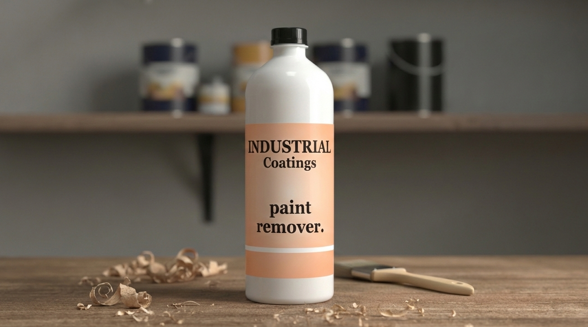

ورنيش أكريليك 1000
Acrylic Varnish 1000
ورنيش شفاف عالي الجودة مقاوم للخدش يستخدم للأجزاء النهائية في دهانات السيارات.
مصلب أكريليك (سريع / عادي / بطيء)
Acrylic Hardener (Fast / Normal / Slow)
مصلب يستخدم مع ورنيش أكريليك لتحديد سرعة الجفاف والتحكم في لمعة الطبقة النهائية.

تنر أكريليك (فرن)
Acrylic Thinner (Oven)
ثنر خاص بدهانات الأكريليك لتسهيل التطبيق وتسريع الجفاف في الأفران.
فيلر بطيء K2 (مجموعة)
Slow Filler K2 (Set)
بطانة فيلر عالية الجودة للتحضير قبل الطبقة النهائية، تتحكم في سرعة الجفاف.
دهان أكريليك K2 أبيض لامع 010
Acrylic Paint K2 White Glossy 010
دهان نهائي أبيض لامع عالي الجودة للأسطح المعدنية والخشبية مع مقاومة ممتازة للخدش.
دهان أكريليك K2 أسود لامع 900
Acrylic Paint K2 Black Glossy 900
دهان أسود لامع عالي الجودة مقاوم للخدش ومناسب للالسيارات والأسطح المعدنية.
دهان أكريليك K2 أبيض فاخر لامع 020
Acrylic Paint K2 White Premium Glossy 020
دهان نهائي أبيض فاخر يعطي لمعة عالية وسطح أملس مقاوم للخدوش.
فيلر سريع K1 (برايمر هوائي)
Fast Filler K1 (Air Primer)
برايمر هوائي سريع الجفاف للاستخدام كطبقة أساسية للأسطح المعدنية قبل الدهان النهائي.
